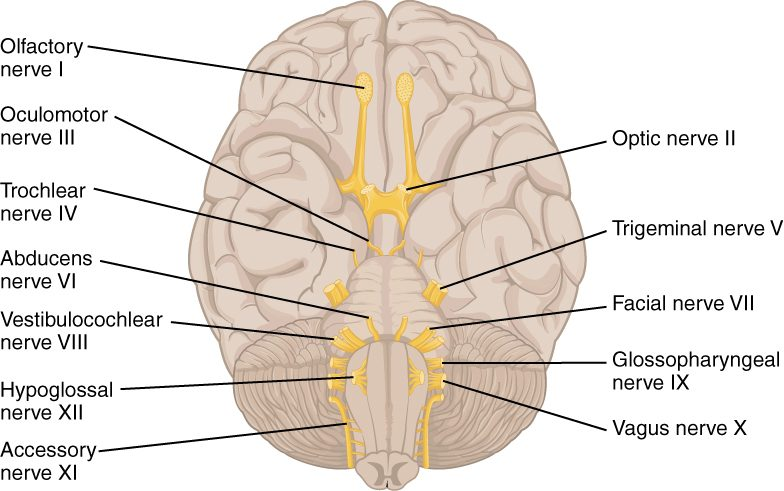

Cranial nerves
1Why this matters
Ms. Okafor, 35, notices at breakfast that coffee dribbles from the left corner of her mouth. In the mirror, the left side of her face hangs slack: she cannot close her left eye, wrinkle the left half of her forehead or smile on that side. Yet when her husband touches her left cheek, she feels it perfectly. One cranial nerve moves the face and a different one feels it, and knowing which is which tells you exactly what has failed.
2What this builds on
3Quick check before you start
1. Which three parts make up the brainstem, from top to bottom?
- Thalamus, hypothalamus, pons
- Midbrain, pons, medulla oblongata
- Cerebellum, pons, medulla oblongata
Show the answer
The brainstem is the midbrain, pons and medulla oblongata. The thalamus and hypothalamus belong to the diencephalon, and the cerebellum sits behind the brainstem but is not part of it.
- Thalamus, hypothalamus, pons:
- Correct: Midbrain, pons, medulla oblongata:
- Cerebellum, pons, medulla oblongata:
2. What does the parasympathetic division of the autonomic nervous system generally do?
- Prepares the body for fight or flight
- Controls skeletal muscles
- Supports rest and digest activities, such as slowing the heart
Show the answer
The parasympathetic division dominates at rest: it slows the heart and promotes digestion. Fight or flight is the sympathetic division, and skeletal muscle is controlled by the somatic nervous system.
- Prepares the body for fight or flight:
- Controls skeletal muscles:
- Correct: Supports rest and digest activities, such as slowing the heart:
4Anatomy

With labels hidden, select a box to reveal its label.
5How it works, step by step
- A wisp of cotton touches the clear surface at the front of your left eye.Sensory endings there fire, and the signal travels along the ophthalmic division (V1) of the left trigeminal nerve.
- The trigeminal axons enter the pons and end on neurons in the brainstem's trigeminal nuclei.Those neurons pass the signal to the motor nuclei of the facial nerve on both sides of the brainstem.
- Motor neurons in both facial nerve nuclei fire.Their axons carry action potentials out along the left and right facial nerves to the orbicularis oculi muscles.
- Both orbicularis oculi muscles contract.Both eyes blink. Touch in on one nerve (V), movement out on another (VII): a missing blink on one side tells you which nerve failed.
6Core concepts
7A common mistake
The wrong idea: The facial nerve carries the feeling from the face, so a person with a paralyzed half face will also have a numb half face.
What actually happens: Feeling from the face travels in the trigeminal nerve (V). The facial nerve (VII) moves the muscles of facial expression and carries taste from the front of the tongue, but it carries almost no skin sensation. In Bell's palsy, a facial nerve problem, half the face cannot move, yet touch on that side feels normal.
8Check yourself
Anything you miss goes into your review queue.
1. Name the pinned nerve.
- Abducens nerve
- Trochlear nerve
- Oculomotor nerve
- Facial nerve
Show the answer
The abducens nerve (VI) is the thin nerve leaving near the midline at the lower border of the pons. It supplies the eye muscle that turns the eye outward.
- Correct: Abducens nerve: Correct. This is the abducens nerve, VI.
- Trochlear nerve: The trochlear nerve (IV) is a very thin nerve that curves around the side of the midbrain, higher up.
- Oculomotor nerve: The oculomotor nerve (III) leaves the front of the midbrain, above the pons.
- Facial nerve: The facial nerve (VII) leaves the side of the brainstem at the pons–medulla border, farther from the midline.
2. Which cranial nerves are purely sensory? Select all that apply.
- Olfactory (I)
- Optic (II)
- Trigeminal (V)
- Vestibulocochlear (VIII)
- Hypoglossal (XII)
- Oculomotor (III)
Show the answer
The three purely sensory cranial nerves carry smell (I), vision (II), and hearing and balance (VIII).
- Correct: Olfactory (I): Yes. The olfactory nerve carries only smell.
- Correct: Optic (II): Yes. The optic nerve carries only vision.
- Trigeminal (V): No. The trigeminal nerve is both: it carries feeling from the face and supplies the chewing muscles.
- Correct: Vestibulocochlear (VIII): Yes. The vestibulocochlear nerve carries only hearing and balance.
- Hypoglossal (XII): No. The hypoglossal nerve is motor, to the tongue muscles.
- Oculomotor (III): No. The oculomotor nerve is motor, to most eye muscles, with parasympathetic axons.
3. After a head injury, a man’s right eye rests turned down and out. His right upper lid droops, and the dark opening at the center of his right eye stays wide when a light shines on it. Which nerve is damaged?
- Right abducens nerve
- Right trochlear nerve
- Right oculomotor nerve
- Right optic nerve
Show the answer
The oculomotor nerve (III) moves the eye up, down and in, raises the upper lid, and carries the parasympathetic axons that narrow the center of the eye in light. With III lost, the two eye muscles still working (supplied by IV and VI) pull the eye down and out.
- Right abducens nerve: Abducens damage leaves the eye turned in, not out, and does not affect the lid or the response to light.
- Right trochlear nerve: Trochlear damage causes double vision looking down, but no drooping lid or wide center of the eye.
- Correct: Right oculomotor nerve: Correct. All three signs fit the oculomotor nerve.
- Right optic nerve: Optic nerve damage causes loss of vision in that eye. It would not move the eye out of position or lower the lid.
4. A patient sees double only when looking to his left. When he tries, his left eye cannot turn outward past the midline. Which nerve is affected?
- Left abducens nerve
- Right abducens nerve
- Left oculomotor nerve
- Left trochlear nerve
Show the answer
The abducens nerve (VI) supplies the muscle that turns the eye outward. Looking left needs the left eye to turn outward, which fails, so the two eyes point in different directions and he sees double.
- Correct: Left abducens nerve: Correct. The left eye cannot abduct, so the left abducens nerve is affected.
- Right abducens nerve: The right abducens nerve turns the right eye outward, which is needed for looking right, not left.
- Left oculomotor nerve: The oculomotor nerve turns the eye inward, up and down, not outward.
- Left trochlear nerve: The trochlear nerve supplies the muscle that turns the eye down, most strongly when it points toward the nose, and its damage causes double vision looking down.
5. Which are functions of the vagus nerve? Select all that apply.
- Slowing the heart
- Moving the muscles of the voice box
- Carrying sensory signals from the stomach to the brainstem
- Moving the tongue
- Increasing the activity of the stomach and intestines
- Closing the eyes
Show the answer
The vagus nerve is both motor and sensory. It supplies the throat and voice box, sends parasympathetic output to the heart, lungs and digestive organs, and carries sensory signals back from those organs.
- Correct: Slowing the heart: Yes. Vagal acetylcholine slows the heart’s pacemaker.
- Correct: Moving the muscles of the voice box: Yes. The vagus nerve supplies all the muscles of the voice box, so damage makes the voice hoarse.
- Correct: Carrying sensory signals from the stomach to the brainstem: Yes. Most vagal axons are sensory, carrying signals such as stomach stretch to the brainstem.
- Moving the tongue: No. The tongue is moved by the hypoglossal nerve.
- Correct: Increasing the activity of the stomach and intestines: Yes. Vagal parasympathetic output increases gut muscle activity and gland secretion.
- Closing the eyes: No. Closing the eyes is done by the orbicularis oculi, supplied by the facial nerve.
6. Fill the gap in the gag response: touch at the back of the throat → ____ carries the signal in → medulla oblongata → vagus nerve → throat muscles contract.
- Hypoglossal nerve
- Trigeminal nerve
- Accessory nerve
- Glossopharyngeal nerve
Show the answer
The glossopharyngeal nerve (IX) carries touch from the upper throat and the back of the tongue to the medulla. The vagus nerve (X) then drives the throat muscles.
- Hypoglossal nerve: The hypoglossal nerve is motor to the tongue; it carries no touch in.
- Trigeminal nerve: The trigeminal nerve carries touch from the face and the front of the mouth, not the back of the throat.
- Accessory nerve: The accessory nerve is motor to the sternocleidomastoid and trapezius.
- Correct: Glossopharyngeal nerve: Correct. IX carries the touch in and X carries the command out.
7. Which three cranial nerves leave the skull together through the jugular foramen?
- Facial, vestibulocochlear and glossopharyngeal
- Oculomotor, trochlear and abducens
- Glossopharyngeal, vagus and accessory
- Vagus, accessory and hypoglossal
Show the answer
IX, X and XI all pass through the jugular foramen at the base of the skull.
- Facial, vestibulocochlear and glossopharyngeal: The facial and vestibulocochlear nerves enter the internal acoustic meatus; only IX uses the jugular foramen.
- Oculomotor, trochlear and abducens: These three eye muscle nerves pass through the superior orbital fissure.
- Correct: Glossopharyngeal, vagus and accessory: Correct. Glossopharyngeal, vagus and accessory share the jugular foramen.
- Vagus, accessory and hypoglossal: The hypoglossal nerve has its own opening, the hypoglossal canal.
9Summary
Twelve pairs of cranial nerves attach to the brain, numbered from front to back: I olfactory (smell), II optic (vision), III oculomotor (most eye movements, raising the upper lid, narrowing the center of the eye), IV trochlear (one eye muscle that turns the eye down, most strongly when it points toward the nose), V trigeminal (feeling from the face; chewing), VI abducens (turning the eye out), VII facial (facial expression, taste from the front of the tongue, tears and saliva), VIII vestibulocochlear (hearing and balance), IX glossopharyngeal (taste and touch from the back of the tongue and throat), X vagus (throat and voice box; parasympathetic to the heart, lungs and gut; sensory from those organs), XI accessory (sternocleidomastoid and trapezius) and XII hypoglossal (tongue). I, II and VIII are sensory; III, IV, VI, XI and XII are motor; V, VII, IX and X are both. III, VII, IX and X carry parasympathetic axons. Each has a quick bedside test, and a pattern of failed tests points to the damaged nerve.